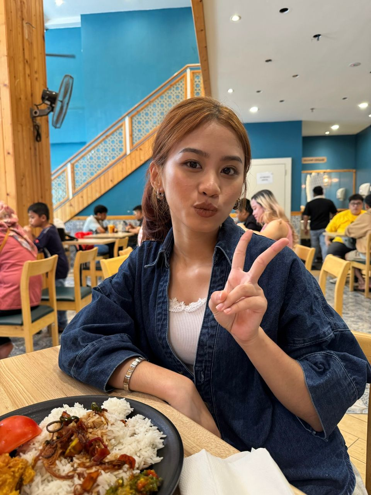

Surprise untuk Baby Princess Manja Bushuk cinta hati saya.

Sayang, I love you. 💖
Good luck untuk 3 paper lagi, saya doakan yang terbaik untuk Sayang. Study smart,jangan malas malas, rest kasi cukup, and percaya pada usaha sendiri. i tau sayang boleh dapatkan result yang cemerlang. nanti bila dah habis kita dah balik rumah nanti kita keluar eh. kita pergi makan cake tau sayang manja i tauu MWAHHH I LOVE YOU <3